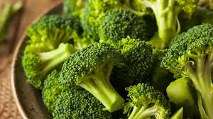

Tomatoes
Tomatoes are a versatile fruit often used as a vegetable in cooking. They are rich in vitamins and antioxidants.
Price: $2.49 per pound

Spinach
Spinach is a nutrient-rich leafy green vegetable. It is high in iron, vitamins, and minerals, making it a healthy choice.
Price: $1.99 per pound

Broccoli
Broccoli is a cruciferous vegetable rich in nutrients. It is known for its health benefits and versatility in cooking.
Price: $2.99 per pound